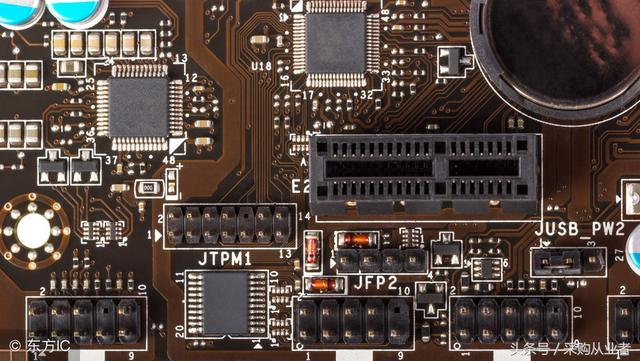
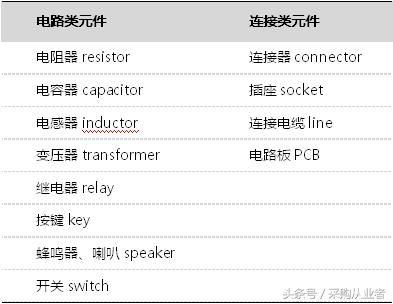
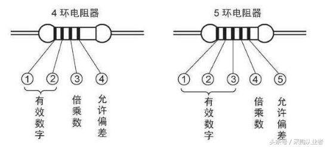
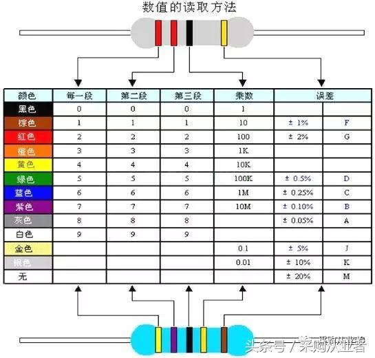
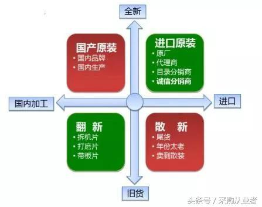

元器件采购必备的基础知识大全｜收藏
采购从业者 2018-09-02 23:41:40

作为一名电子元器件采购，不仅需要灵活的业务能力，也需要掌握电子元器件的分类、型号识别、用途等专业基础知识，才能为企业提供更专业的采购建议。
电子元器件的分类
用于制造或组装电子整机用的基本零件称为电子元器件，元器件是电子电路中的独立个体。
主动元件与被动元件
主动元件指当获得能量供给时能够对电信号激发放大、振荡、控制电流或能量分配等主动功能甚至执行数据运算、处理的元件。
主动元件包括各式各样的晶体管、集成电路(ic)、影像管和显示器等。
被动元件相对于主动元件来说的，是指不能对电信号激发放大、振荡等，对电信号的响应是被动顺从的，而电信号按原来的基本特征通过电子元件。
最常见电阻、电容、电感等就是被动元件。 有源元器件与无源元器件
有源元器件对应的是主动元件。如果电子元器件工作时，其内部有电源存在，则这种器件叫做有源器件，需要能量的来源而实现它特定的功能。
有源器件自身也消耗电能，大功率的有源器件通常加有散热器。
与无源元件相对应的是被动元件。电阻、电容和电感类元件在电路中有信号通过就能完成规定功能，不需要外加激励电源，所以称为无源器件。
无源器件自身消耗电能很小，或把电能转变为不同形式的其他能量。
分立元器件是与集成电路(ic)
从物理结构、电路功能和工程参数上，有源器件可以分为分立器件和集成电路两大类。分立元器件是与集成电路(ic)相对而言的。
集成电路(ic integrated circuit)是一种把一类电路中所需的晶体管、阻容感等元件及布线互连一起，制作在一小块或几小块半导体晶片或介质基片上，封装为一整体，具有电路功能的电子元器件。
分立元器件就是指普通的电阻、电容、晶体管等单个电子元件，统称分立元件。分立元件就是功能单一、“最小”的元件，内部不再有其它元件功能单元。
电路类元件与连接类元件区分
电子系统中的无源器件可以按照所担当的电路功能常分为电路类器件、连接类器件。

电路类元件与连接类元件区分
常用电子元器件的识别
一、 电阻
电阻器我们习惯称之为电阻，是电子设备中最常应用的电子元件， 电阻在电路中用“r”加数字表示，如：r13表示编号为13的电阻。电阻在电路中的主要作用为分流、限流、分压、偏置、滤波(与电容器组合使用)和阻抗匹配等。
参数识别：电阻的单位为欧姆(ω)，倍率单位有：千欧(kω)，兆欧(mω)等。换算方法是：1兆欧(mω)=1000千欧(kω)=1000000欧
电阻的参数标注方法有3种，即直标法、色标法和数标法。
1、数标法主要用于贴片等小体积的电路，如：472 表示 47×100ω=即4.7k;103 表示10000ω(10后面加三个0)也就是10kω
2、色环标注法使用最多，第一道色环表示阻值的最大一位数字，第二道色环表示第二位数字，第三道色环表示阻值未应该有几个零，第四道色环表示阻值的误差。

色环标注法
电阻的色标位置和倍率关系如下表所示：

电阻的色标位置和倍率关系
二、 电容
电容是由两片金属膜紧靠，中间用绝缘材料隔开而组成的元件。电容在电路中一般用“c”加数字表示，如c223表示编号为223的电容电容的特性主要是隔直流通交流。
电容器的主要参数也有两个，标称电容量和允许误差。
1、标称电容量，指电容器上标注的电容量，电容容量的大小就是表示能贮存电能的大小，电容对交流信号的阻碍作用称为容抗，它与交流信号的频率和电容量有关。
容抗xc=1/2πf c (f表示交流信号的频率，c表示电容容量)
识别方法：电容的识别方法与电阻的识别方法基本相同，也分直标法、色标法和数标法三种。电容的基本单位用法拉(f)表示，其它单位还有：毫法(mf)、微法(uf)、纳法(nf)、皮法(pf)。其中：1法拉=103毫法=106微法=109纳法=1012皮法
直标法：容量大的电容其容量值在电容上直接标明，如2200 uf/10v
字母表示法：152m=1500pf
数字表示法：一般用三位数字表示容量大小，前两位表示有效数字，第三位数字是倍率。如：102表示10×102pf=1000pf
2、允许误差分三级，同于电阻器误差的表示方法。微调电容器和可变电容器标出了它的电容量的最小值和最大值，如7/270p
三、 电感
电感线圈是将绝缘的导线在绝缘的骨架上绕一定的圈数制成。直流可通过线圈，直流电阻就是导线本身的电阻，压降很小;当交流信号通过线圈时，线圈两端将会产生自感电动势，自感电动势的方向与外加电压的方向相反，阻碍交流的通过，所以电感的特性是通直流阻交流，频率越高，线圈阻抗越大。电感在电路中可与电容组成振荡电路。
电感在电路中常用“l”加数字表示，如：l3表示编号为3的电感。
电感一般有直标法和色标法，色标法与电阻类似。电感的基本单位为：亨(h) 换算单位有：1h=103mh=106uh。
四、 晶体二极管
二极管的主要特性是单向导电性，也就是在正向电压的作用下，导通电阻很小;而在反向电压作用下导通电阻极大或无穷大。晶体二极管在收音机中对无线电波进行检波，在电源变换电路中把交流电变换成为脉动直流电，在数字电路中充当无触点开关等，都是利用了它的单向导电特性。
晶体二极管按作用可分为：整流二极管(如1n4004)、隔离二极管(如1n4148)、肖特基二极管(如bat85)、发光二极管、稳压二极管等。
1、识别方法：二极管的识别很简单，小功率二极管的n极(负极)，在二极管外表大多采用1种色圈标出来，有些二极管也用二极管专用符号来表示p极(正极)或n极(负极)，也有采用符号标志为“p”、“n”来确定二极管极性的。发光二极管的正负极可从引脚长短来识别，长脚为正，短脚为负。
2、主要参数
额定正向工作电流是指二极管长期连续工作时允许通过的最大正向电流值。因为电流通过管子时会使管芯发热，温度上升，温度超过容许限度(硅管为140左右，锗管为90左右)时，就会使管芯过热而损坏。
最高反向工作电压，加在二极管两端的反向电压高到一定值时，会将管子击穿，失去单向导电能力。为了保证使用安全，规定了最高反向工作电压值。
反向电流是指二极管在规定的温度和最高反向电压作用下，流过二极管的反向电流。反向电流越小，管子的单方向导电性能越好。值得注意的是反向电流与温度有着密切的关系，大约温度每升高10，反向电流增大一倍。
五、 晶体三极管
晶体三极管在电路中具有放大作用和开关作用。我们使用晶体三极管在电路中放大微弱的信号电流或制成自动开关，控制用电器的通断。晶体三极管在电路中常用“q”加数字表示，如：q1表示编号为1的三极管。
常用晶体三极管的封装形式有金属封装和塑料封装2大类，引脚的排列方式具有一定的规律。晶体三极管的三个极，分别称为基极(b)、集电极(c)和发射极(e)，发射极上的箭头表示流过三极管的电流方向。
六、 集成电路
集成电路是将二极管、三极管和电阻电容等元件按照电路结构的要求，制作在一小块半导体材料上，形成一个完整的具有一定功能的电路，然后封装而成，它的文字符号是ic。
集成电路是60年代后期，随着电子技术的发展而迅速发展起来的。使用集成电路和使用分立元件组装的电路相比，具有元件少、重量轻、体积小、性能好和省电等多项优点，所以电子产品的集成化已成为电子技术发展的必然趋向。
区分原装与散新ic芯片
市面上的ic芯片林林总总、各式各样，不注意区分，有时很难看出各种料有何不同。现在我们看看有哪些区分原装与散新芯片的要点。

区分原装与散新ic芯片
1 看芯片表面是否有打磨过的痕迹
凡打磨过的芯片表面会有细纹甚至以前印字的微痕，有的为掩盖还在芯片表面涂有一层薄涂料，看起来有点发亮，无塑胶的质感。
2 看印字
现在的芯片绝大多数采用激光打标或用专用芯片印刷机印字，字迹清晰，既不显眼，又不模糊且很难擦除。翻新的芯片要么字迹边沿受清洗剂腐蚀而有"锯齿"感，要么印字模糊、深浅不一、位置不正、容易擦除或过于显眼。
丝印工艺现在的ic大厂早已淘汰，但很多芯片翻新因成本原因仍用丝印工艺，这也是判断依据之一，丝印的字会略微高于芯片表面，用手摸可以感觉到细微的不平或有发涩的感觉。不过，近来用激光打标机修改芯片标记的现象越来越多，特别是在内存及一些高端芯片方面，一旦发现激光印字的位置存在个别字母不齐、笔画粗细不均的，可以认定是翻新的。
主要的方法是看整体的协调性，字迹与背景、引脚的新旧程度不符如字标过新、过清有问题的可能性也较大，但不少小厂特别是国内的某些小ic公司的芯片却生来如此，这为鉴定增添了不少麻烦，但对主流大厂芯片的判断此法还是很有意义的。
3 看引脚
凡光亮如"新"的镀锡引脚必为翻新货，正货ic的引脚绝大多数应是所谓"银粉脚"，色泽较暗但成色均匀，表面不应有氧化痕迹或"助焊剂"，另外dip等插件的引脚不应有擦花的痕迹，即使有(再次包装才会有)擦痕也应是整齐、同方向的且金属暴露处光洁无氧化。
4 看器件生产日期和封装厂标号
正货的标号包括芯片底面的标号应一致且生产时间与器件品相相符，而未remark的翻新片标号混乱，生产时间不一。remark的芯片虽然正面标号等一致，但有时数值不合常理(如标什么"吉利数")或生产日期与器件品相不符，器件底面的标号若很混乱也说明器件是remark的。
5 测器件厚度和看器件边沿
不少原激光印字的打磨翻新片(功率器件居多)因要去除原标记，必须打磨较深，如此器件的整体厚度会明显小于正常尺寸，但不对比或用卡尺测量，一般经验不足的人还是很难分辨的，但有一变通识破法，即看器件正面边沿。
因塑封器件注塑成型后须"脱模"，故器件边沿角呈圆形(r角)，但尺寸不大，打磨加工时很容易将此圆角磨成直角，故器件正面边沿一旦是直角的，可以判断为打磨货。
6 看包装
除此之外，再有一法就是看商家是否有大量的原外包装物，包括标识内外一致的纸盒、防静电塑胶袋等，实际辨别中应多法齐用，有一处存在问题则可认定器件的货质。
小结
除了这些基本的元器件知识，采购人员还是具备多种业务能力，了解市场行情，发掘供货渠道。要将线下市场走访和线上交易平台结合起来，才能保证为企业采购到价平质优的正品元器件。